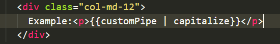
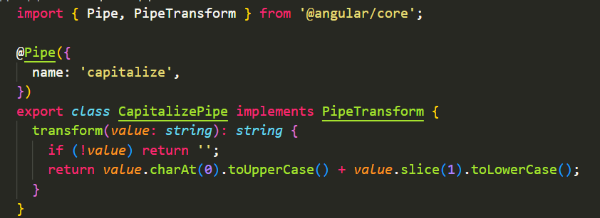

<div class="container p-5">
  <div class="row">
    <div class="col-md-12">
      <h5>
        In angular pipes are used to transform data before rendering them into
        the browser. We can apply pipes in the html template using
        <code>|</code> operator, there are several built in pipes in angular
        like <code>titlecase, uppercase, lowercase, currency, date, json.</code>
      </h5>
      <br />
      <div class="col-md-12">
        <h5 class="text-primary">Some Built-in-pipes in angular</h5>
        <table class="table table-bordered border-light">
          <tr>
            <th>Name</th>
            <th>Description</th>
          </tr>
          <tr>
            <td><code>titlecase</code></td>
            <td>
              {{ title | titlecase }}
            </td>
          </tr>
          <tr>
            <td><code>uppercase</code></td>
            <td>
              {{ upper | uppercase }}
            </td>
          </tr>
          <tr>
            <td><code>lowercase</code></td>
            <td>
              {{ lower | lowercase }}
            </td>
          </tr>
          <tr>
            <td><code>currency</code></td>
            <td>
              {{ money | currency }} (we can specify currency symbol and code
              also)
            </td>
          </tr>
          <tr>
            <td><code>date</code></td>
            <td>{{ date | date }} (we can specify date format also)</td>
          </tr>
          <tr>
            <td><code>json</code></td>
            <td>
              {{ user | json }}
            </td>
          </tr>
        </table>
      </div>
      <div class="col-md-12">
        <h5 class="text-primary">Types of pipes</h5>
        <ol>
          <li>
            <span class="text-danger">Pure pipes:</span> Pure pipe is only
            called when angular detects a change in value or the parameter pass
            to a pipe.
          </li>
          <li>
            <span class="text-danger">Impure pipes:</span> Impure pipes are
            called for every change detection cycle, no matter whether the
            parameter or value changes.
          </li>
          <li>
            <span class="text-danger">Parameterized:</span> when we pass any
            parameters to the pipes, it is called parameterized pipes we can
            pass n number of parameters to pipes using a colon (:).
          </li>
        </ol>
      </div>
      <div class="col-md-12 pt-3">
        <h5 class="text-primary">Custom Pipes</h5>
        <p>
          If there is different requirement, other than the built-in
          pipes in angular, we can create our own pipe by this
          command.<br />
          <code>ng generate pipe 'pipe-name'</code>
        </p>

        <div class="row">
          <div class="col-md-12">
            Example:<p>{{customPipe | capitalize}}</p>
          </div>
        </div>
        <div class="row">
          <div class="col-md-12">
            
          </div>
        </div><br>
        <div class="row">
          <div class="col-md-12">
            
          </div>
        </div>
      </div>
    </div>
  </div>
</div>